Status dashboard prototype: changes made after your approval
You approved the prototype on 2 November 2026 at commit c5d21c9d7. That approval stands. Two changes came after it, and you have not seen them. Each picture pair shows the approved page on the left and the changed page on the right.
1. Task pages show Context, and capabilities open a feature page
Your words of 31 October: entity pages (feature, outcome, epic, theme, task) must open with what the item is about, from the record's Outcome and Context. The approved page showed Outcome only and had no feature page.
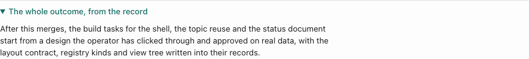
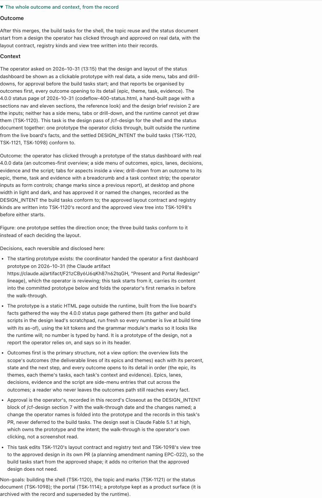
Task records have no section named Context. The page uses each record's Description, with its text figures left out. The disclosure stays closed until opened.
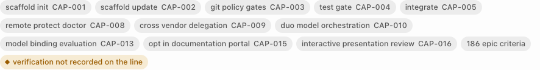
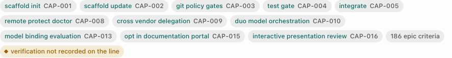
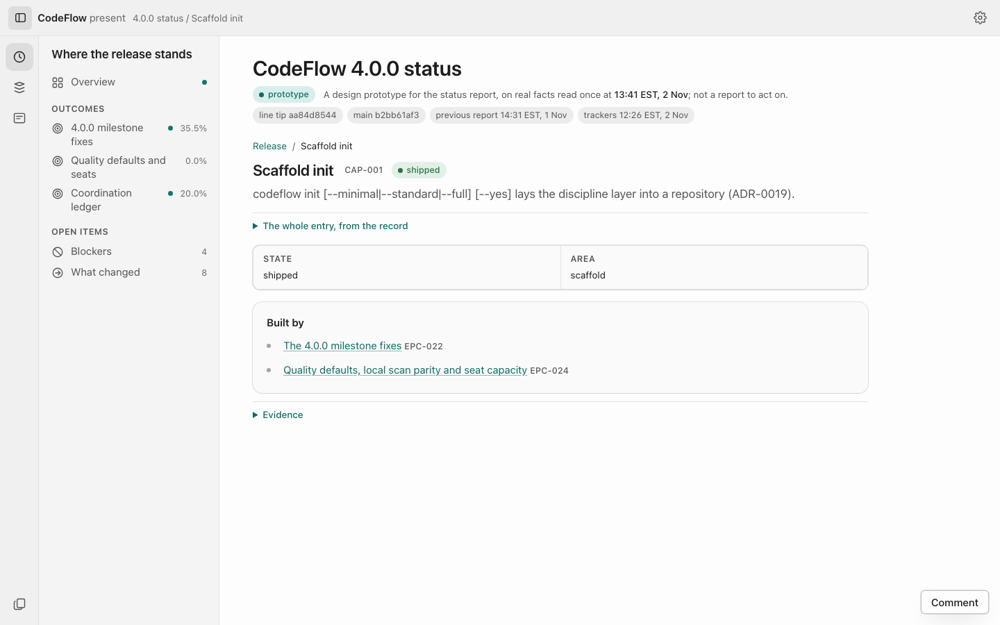
2. Stage colours: bars, stage dots and specimen marks
Your words of 31 October asked that chart stage colours be distinguishable. On the approved page, the "complete on the line only" colour was under the 3:1 contrast floor in 8 of 228 checks. No single colour mix passes both that floor and the separation floor from "on main": 75% fails separation, and 65% fails contrast on the fill.
The change: a 65% fill to stay separate from "on main", plus a 1 px accent outline that gives the mark its 3:1 boundary. The coord/catalog Coordinator chose this. The separation floor of 15 was selected by the visual and docs Coordinator, since retired, and is not your decision.
Bars
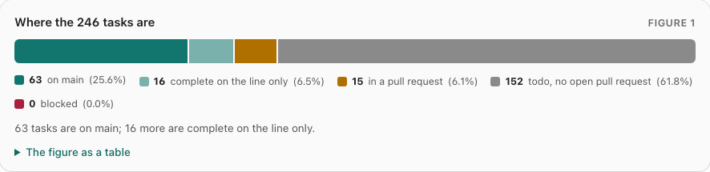
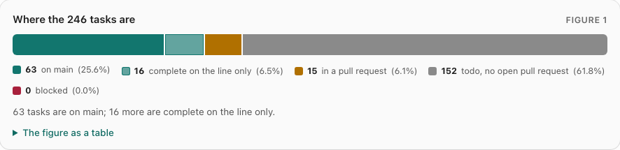
Stage dots on a task page
The dots for the stages a task has passed were full accent on the approved page, the colour the bars use for "on main". They now use the line colour and outline.
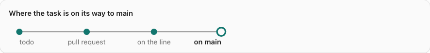
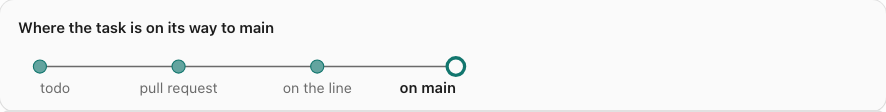
Specimen marks for "in a pull request"
These 13 marks, in three specimen pages, were under 3:1. They now use the warning colour the bars already use for that stage.
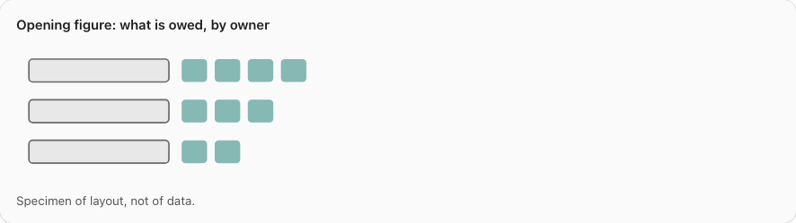
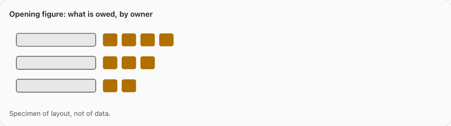